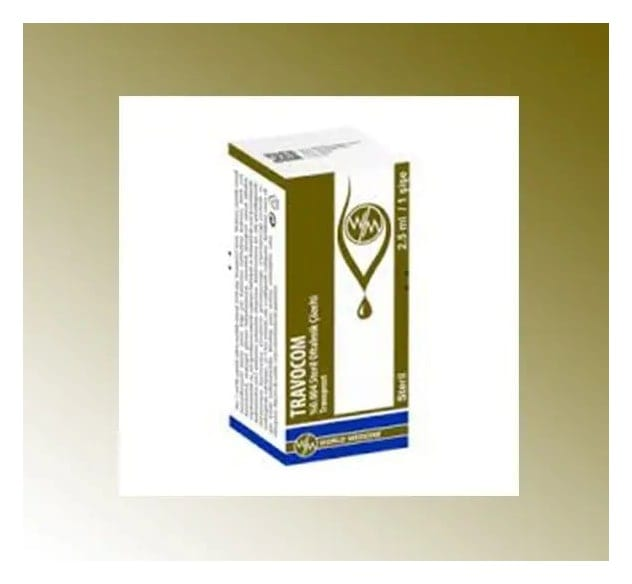

Travocom %0.004 Steril Oftalmik ÇÖZELTI,1 Şişe

Ne için kullanılır
KT · Bölüm 1TRAVOCOM, renksiz, berrak çözelti içeren bir göz damlası. HDPE koruyucu halka ve LDPE damlalıklı 2,5 ml çözelti içeren 5 mL’lik LDPE şişeler içerisinde sunulmaktadır. TRAVOCOM, prostaglandin analogları olarak adlandırılan ilaç grubunda yer alan travoprost içermektedir. Göz içi basıncının düşmesini sağlar. Tek başına veya örneğin beta-blokörler gibi göz içi basıncını düşürebilen diğer damlalar ile birlikte de kullanılabilir. Bu ilacı kullanmaya başlamadan önce bu KULLANMA TALİMATINI dikkatlice okuyunuz, çünkü sizin için önemli bilgiler içermektedir. • Bu kullanma talimatını saklayınız. Daha sonra tekrar okumaya ihtiyaç duyabilirsiniz. • Eğer ilave sorularınız olursa, lütfen doktorunuza veya eczacınıza danışınız. • Bu ilaç kişisel olarak sizin için reçete edilmiştir, başkalarına vermeyiniz. • Bu ilacın kullanımı sırasında, doktora veya hastaneye gittiğinizde bu ilacı kullandığınızı doktorunuza söyleyiniz. • Bu talimatta yazılanlara aynen uyunuz. İlaç hakkında size önerilen dozun dışında yüksek veya düşük doz kullanmayınız.
TRAVOCOM göz damlası, gözdeki yüksek basıncı tedavi etmesi amacıyla kullanılmaktadır. Bu basınç glokom (göz tansiyonu) adlı hastalığa yol açabilir.